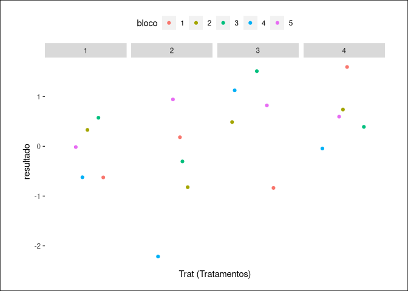

Pacote de funções utilizadas na matéria de Planejamento e Análise de Experimentos I do curso de Estatística da Universidade Estadual de Maringá.
Exemplos
## Simulações de delineamentos
# Delineamento em blocos incompletos
bloco_incompleto(4, 4, 2)$dados_matriz %>% kable_()
| 1 |
- |
-0.643775 |
- |
0.229947 |
| 2 |
0.514374 |
-0.016378 |
- |
- |
| 3 |
0.177760 |
- |
0.273647 |
-1.217484 |
| 4 |
- |
- |
-1.244347 |
- |
| 0.6112997 |
3 |
1 |
1 |
1 |
| -0.9833405 |
4 |
1 |
2 |
1 |
| -1.4613462 |
2 |
1 |
3 |
1 |
| 0.5559402 |
1 |
1 |
4 |
1 |
| 0.4489130 |
4 |
2 |
1 |
1 |
| -0.9019673 |
1 |
2 |
2 |
1 |
quadrado$dados_matriz %>% kable_()
| 1 |
3 |
4 |
1 |
2 |
| 2 |
4 |
1 |
2 |
3 |
| 3 |
2 |
3 |
4 |
1 |
| 4 |
1 |
2 |
3 |
4 |
## ANOVA e comparações múltiplas
# Definindo seed
set.seed(1)
# Gerando dados
dados <- bloco_casualizado(4, 5)$dados
# Gerando valores da anova a partir dos dados
valores <- anova_rbcd(dados, "Trat", "resultado", "bloco")
valores$estimados %>% kable_()
| 0.1905239 |
0.7620955 |
0.5715716 |
0.9526194 |
0.7620955 |
# Gerasndo comparações múltiplas
comparacao <- comparacoes("Trat", "resultado", "bloco", dados)
# Comparação de tukey
comparacao$tukey %>% kable_()
| 1 - 2 |
0.3708963 |
-1.231121 |
1.9729140 |
0.8999 |
| 1 - 3 |
-0.6936659 |
-2.295684 |
0.9083519 |
0.5885 |
| 1 - 4 |
-0.7262024 |
-2.328220 |
0.8758153 |
0.5536 |
| 2 - 3 |
-1.0645622 |
-2.666580 |
0.5374556 |
0.2509 |
| 2 - 4 |
-1.0970987 |
-2.699116 |
0.5049190 |
0.2297 |
| 3 - 4 |
-0.0325365 |
-1.634554 |
1.5694812 |
0.9999 |
# Gráfico de comparações dos tratamentos
plot(comparacao, trat = TRUE)
